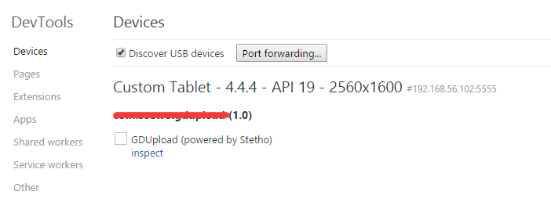
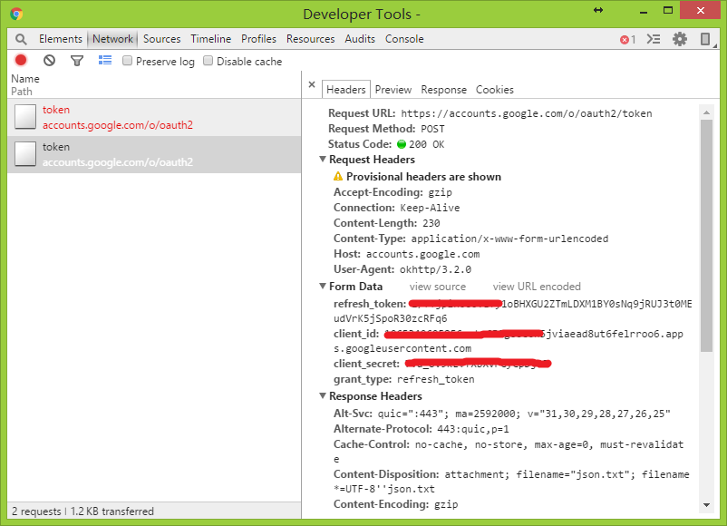
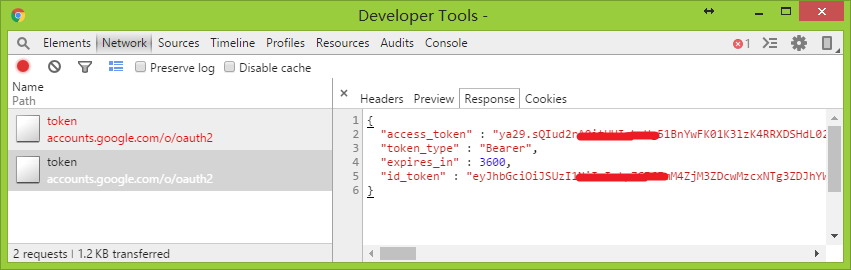

Stetho是Facebook出品的一个非常强大的Android调试工具。在基于你已经正常使用Retrofit或者okhttp的情况下，只需要简单3步，你就可以在Chrome上的Developer Tools中调试你Retrofit的请求了。就像Web开发使用调试功能查看页面的访问数据一样那么方便。不仅如此，你还可以在里面直接查看SQLite中的数据等等等。。。步骤如下：
Step1：添加依赖
1
2compile 'com.facebook.stetho:stetho:1.3.1'
compile 'com.facebook.stetho:stetho-okhttp3:1.3.1'Step2：初始化Stetho
1
2
3
4
5
6
7
8public class MyApplication extends Application {
public void onCreate() {
super.onCreate();
if (BuildConfig.DEBUG) {
Stetho.initializeWithDefaults(this);
}
}
}
（一般放在Application中，注意仅需在Debug模式下打开，否则会对CPU跟内存都有很大的影响。不信？打开Android Studio的Monitors，你会看见内存在不断的上涨然后GC，如此反复-_-|||。应该是在底层维护了一个socket的长连接之类的吧。）
- Step3：在初始化
OkHttpClient的时候添加Interceptor，最后在Retrofit中设置为默认的client。1
2
3
4
5
6
7
8
9
10
11Retrofit.Builder builder = new Retrofit.Builder()
.baseUrl(BASE_URL)
.addConverterFactory(GsonConverterFactory.create())
.addCallAdapterFactory(RxJavaCallAdapterFactory.create());
// Enable stetho interceptor just in debug mode
if (BuildConfig.DEBUG) {
OkHttpClient client = new OkHttpClient.Builder()
.addNetworkInterceptor(new StethoInterceptor())
.build();
builder.client(client);
}
完成上述的步骤之后，重新run一下你的应用程序。在Chrome的地址栏输入chrome://inspect查看device状态，应该可以看见你应用的进程出现在了此处，点击inspect按钮即可进入调试界面。注意，如果第一次打开很久进不去，需要肉身翻墙-_-|||。。。如下图：

然后在App中进行相应的网络请求，在Network这一栏中即可看见刚刚发出的网络请求，Request和Response的数据都可以方便的查看，简直是接口调试神器有木有~


最后顺便吐槽下，有两个比较坑爹的点：
1.如果你的请求与文件相关，切换到到Preview或者Response的时候回卡UI，他会把文件数据以字符串的形式显示，然后就一直在卡着UI，文件数据越大，卡得越久。所以调试的时候我都把上传的图片改得小小的。Github上有人报issue了，有兴趣可以关注这里issues329，很遗憾它还是open的。
2.每次关闭进程，都会Connection Lose，因此你不得不再次Inspect，这点挺恶心的，就不能自动重新连接么。-_-|||